|
|
| hard corals text index | photo index |
| Phylum Cnidaria > Class Anthozoa > Subclass Zoantharia/Hexacorallia > Order Scleractinia > Family Euphylliidae > Euphyllia sp. |
| Branching
anchor corals Euphyllia paraancora* Family Euphylliidae updated Nov 2019 Where seen? This hard coral with white tipped U-shaped tentacles is sometimes seen on some of our Southern shores. Larger specimens are found only on undisturbed shores. Features: The colony appears to be boulder-shaped, those seen 10-20cm, sometimes much larger. But the colony is not solid (massive). Hidden under the tentacles, the large corallites are branching and trumpet-shaped (phaceloid): long narrow column flaring out at the top (2-3cm). The branching corallites are arranged with the broad, flared portions facing out to form an overall spherical shape. When the polyps' long tentacles are expanded, they often form rosettes because of the corallite's trumpet-shaped feature. Tentacles long (2-3cm) with white U-shaped tips. Colours seen include green, brown and purple with paler tips. Sometimes confused with other Euphyllia species. Here's more on how to tell apart the Euphyllia species. Status and threats: This coral is listed as globally Vulnerable by the IUCN. Like other creatures of the intertidal zone, they are affected by human activities such as reclamation and pollution. Trampling by careless visitors, and over-collection also have an impact on local populations. |
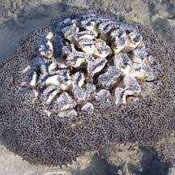 Terumbu Bemban, Apr 11 |
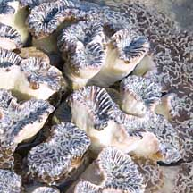 Trumpet-shaped corallites. |
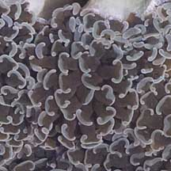 Tentacles with U-shaped tips, often forming rosettes. |
|
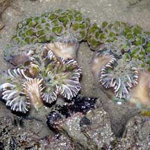 Kusu Island, May 04 |
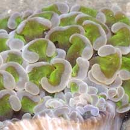 |
|
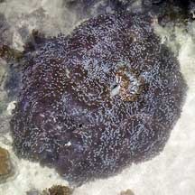 Pulau Hantu, Aug 04 |
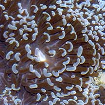 Mouth of the polyp surrounded by tentacles with U-shaped tips. |
|
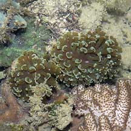 Sisters Island, Jun 07 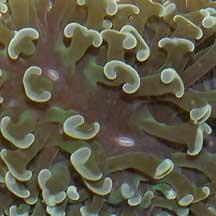 |
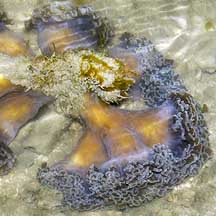 Pulau Hantu, Aug 04 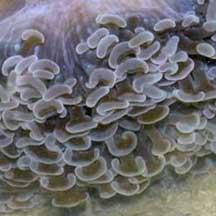 |
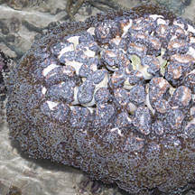 Terumbu Bemban, Jul 11 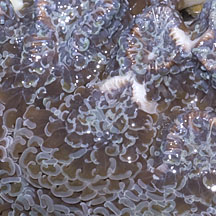 |
*Species are difficult to positively identify without close examination.
On this website, they are grouped by external features for convenience of display.
| Branching anchor corals on Singapore shores |
On wildsingapore
flickr
|
| Other sightings on Singapore shores |
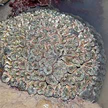 Tanah Merah Ferry Terminal, Jun 22 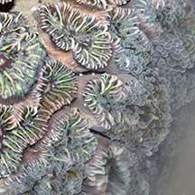 Photo shared by Loh Kok Sheng on facebook. |
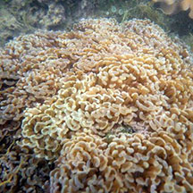 Terumbu Pempang Tengah, Apr 13 Photo shared by Loh Kok Sheng on flickr. |
|
Links
References
|